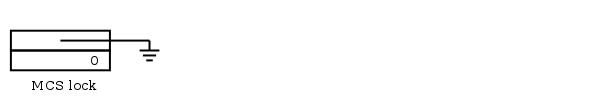
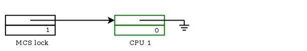
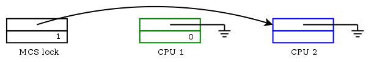
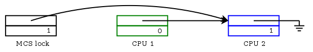
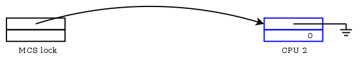

MCS locks and qspinlocks
Conceptually, a spinlock is a simple mechanism. The lock can be as small as a single bit; if that bit is clear, the lock is available. A thread wanting to acquire the lock will attempt to set that bit with an atomic compare-and-swap instruction, "spinning" repeatedly if the lock is not available at the time. Over the years, spinlocks have become more complex; ticket spinlocks added fairness to the mechanism in 2008, and 2013 saw the addition of better paravirtualization support, for example.
Spinlocks still suffer from a fundamental problem beyond the fact that simply spinning for a lock can be painful, though: every attempt to acquire a lock requires moving the cache line containing that lock to the local CPU. For contended locks, this cache-line bouncing can hurt performance significantly. So it's not surprising that developers have been working to reduce cache contention with spinlocks; an attempt to add automatic backoff to spinlocks in early 2013 was working toward that goal, for example, but this work was never merged.
MCS locks
More recently, Tim Chen put together a different approach based on a primitive called an "MCS lock" (described in this paper [PDF]). By expanding a spinlock into a per-CPU structure, an MCS lock is able to eliminate much of the cache-line bouncing experienced by simpler locks, especially in the contended case.
In 3.14 the tip tree for 3.15, an MCS lock is defined by
an instance of this structure:
struct mcs_spinlock {
struct mcs_spinlock *next;
int locked; /* 1 if lock acquired */
};
If one is willing to put up with your editor's second-rate drawing skills, one could envision an unlocked MCS spinlock as follows:

When a CPU comes along with a desire to acquire this lock, it will provide an mcs_spinlock structure of its own. Using an unconditional atomic exchange operation, it stores the address of its own structure in the lock's next field and marks the lock as taken, yielding a situation that looks like this:

The atomic exchange will return the previous value of the next pointer. Since that pointer was null, the acquiring CPU knows that it was successful in acquiring the lock. Once that is done, the lock is busy, but there is no contention for it. Should a second CPU come along and try to acquire the lock, it will start in the same way, storing a pointer to its mcs_spinlock structure in the next pointer of the main lock:

When the second CPU does this atomic swap on the main lock, it too will get back the previous contents of the next field — the pointer to the first CPU's mcs_spinlock structure. The non-NULL value tells the second CPU that the lock is not available, while the specific pointer value says who is ahead in line for the lock. The second CPU will respond to this situation by storing a pointer to its mcs_spinlock structure in the next field of CPU 1's structure:

Note that the use of an atomic swap operation on the main lock means that only CPU 2 can have a pointer to CPU 1's mcs_spinlock structure. So there is no need for atomic operations when making changes to that structure, though some careful programming is still needed to make sure that changes are visible to CPU 1 at the right times.
Once this assignment is done, CPU 2 will spin on the locked value in its own mcs_spinlock structure rather than the value in the main lock. Its spinning will thus be entirely CPU-local, not touching the main lock at all. This process can go on indefinitely as contention for the lock increases, with each CPU placing itself in line behind those that are already there, and each CPU spinning on its own copy of the lock. The pointer in the "main" lock, thus, always indicates the tail of the queue of waiting CPUs.
When CPU 1 finally finishes with the lock, it will do a compare-and-swap operation on the main lock, trying to set the next pointer to NULL on the assumption that this pointer still points to its own structure. If that operation succeeds, the lock was never contended and the job is done. If some other CPU has changed that pointer as shown above, though, the compare-and-swap will fail. In that case, CPU 1 will not change the main lock at all; instead, it will change the locked value in CPU 2's structure and remove itself from the situation:

Once its copy of locked changes, CPU 2 will break out of its spin and become the new owner of the lock.
An MCS lock, thus, is somewhat more complicated than a regular spinlock. But that added complexity removes much of the cache-line bouncing from the contended case; it also is entirely fair, passing the lock to each CPU in the order that the CPUs arrived.
Qspinlocks
In the tip tree, MCS locks are used in the implementation of mutexes, but they do not replace the existing ticket spinlock implementation. One reason for this is size: ticket spinlocks fit into a single 32-bit word, while MCS locks do not. That turns out to be important: spinlocks are embedded into many kernel structures, some of which (notably struct page) cannot tolerate an increase in size. If the MCS lock technique is to be used throughout the kernel, some other approach will be needed.
The version of that approach which is likely to be merged can be seen in the "qspinlock" patch series from Peter Zijlstra which, in turn, is based on an implementation by Waiman Long. In this patch set, each CPU gets an array of four mcs_spinlock structures in a well-known location. Four structures are needed because a CPU could be trying to acquire more than one spinlock at a time: imagine what happens if a hardware interrupt comes in while a thread is spinning on a lock, and the interrupt handler tries to take a lock of its own, for example. The array of structures allows lock acquisition attempts from the normal, software interrupt, hardware interrupt, and non-maskable interrupt contexts to be kept apart.
The 32-bit qspinlock is divided into a number of fields:
- an integer counter to function like the locked field described above,
- a two-bit "index" field saying which entry in the per-CPU mcs_spinlock array is used by the waiter at the tail of the list,
- a single "pending" bit, and
- an integer field to hold the CPU number indicating the tail of the queue.
The last field is arguably the key: by storing a CPU number rather than a pointer, the qspinlock patch set allows all of the relevant information to be crammed into a single 32-bit word. But there are a couple of other optimizations to be found in this patch set as well.
One has to do with the value used by each CPU for spinning. When a CPU is next in line to acquire a lock, it will spin on the lock itself instead of spinning on its per-CPU structure. In this way, the per-CPU structure's cache line need not be touched when the lock is released, removing one cache line miss from the equation. Any subsequent CPUs will spin on their own structures until they reach the head of the queue.
The "pending" bit extends that strategy a bit further. Should a CPU find that a lock is busy but that no other CPUs are waiting, it will simply set the pending bit and not bother with its own mcs_spinlock structure at all. The second CPU to come along will see the pending bit, begin the process of building the queue, and spin on its local copy of the locked field as usual. Cache-line bouncing between waiters is still eliminated, but the first waiter is also able to avoid the cache-miss penalty associated with accessing its own mcs_spinlock array.
Performance-oriented patches should, of course, always be accompanied by benchmark results. In this case, Waiman included a set of AIM7 benchmark results with his patch set (which did not include the pending-bit optimization). Some workloads regressed a little, but others shows improvements of 1-2% — a good result for a low-level locking improvement. The disk benchmark runs, however, improved by as much as 116%; that benchmark suffers from especially strong contention for locks in the virtual filesystem layer and ext4 filesystem code.
The qspinlock patch can, thus, improve performance in situations where
locks are highly contended, though, as Waiman noted in the patch posting,
it is not meant to be an actual solution for contention problems.
Importantly, qspinlocks also perform better in the uncontended case.
Releasing a ticket spinlock requires a read-modify-write operation, while a
qspinlock can be released with a simple write. So, while the main
performance benefits of qspinlocks are to be seen on large systems, most
systems should see at least a small improvement. That should be enough to
get this code merged as soon as the 3.15 development cycle.
| Index entries for this article | |
|---|---|
| Kernel | Spinlocks |
Posted Mar 12, 2014 1:32 UTC (Wed)
by ncm (guest, #165)
[Link] (4 responses)
Furthermore... why use MCS at all if qspinlocks are both smaller and faster? Should all the MCS locks become qspinlocks, over time?
Posted Mar 12, 2014 11:40 UTC (Wed)
by corbet (editor, #1)
[Link] (2 responses)
Posted Mar 21, 2014 0:29 UTC (Fri)
by kevinm (guest, #69913)
[Link] (1 responses)
Mutexes can't sleep while holding a spinlock, though.
Posted Mar 25, 2014 1:47 UTC (Tue)
by joern (guest, #22392)
[Link]
Posted Mar 20, 2014 15:21 UTC (Thu)
by icefield (guest, #82338)
[Link]
Posted Mar 12, 2014 4:23 UTC (Wed)
by martinfick (subscriber, #4455)
[Link] (10 responses)
Posted Mar 12, 2014 11:42 UTC (Wed)
by corbet (editor, #1)
[Link] (9 responses)
Posted Mar 12, 2014 13:05 UTC (Wed)
by martinfick (subscriber, #4455)
[Link] (8 responses)
Posted Mar 12, 2014 13:59 UTC (Wed)
by rriggs (guest, #11598)
[Link] (7 responses)
Posted Mar 12, 2014 23:04 UTC (Wed)
by james (guest, #1325)
[Link] (5 responses)
What I'm not sure about is how often this situation will arise in practice. Obviously, you have to have a lock with at least two CPUs waiting for the situation to arise, and an interrupt being handled on the wrong CPU at just the wrong time. It looks like this is sufficiently infrequent that the performance hit when this happens is dwarfed by the performance benefits of the technique, but it would probably be a good idea to retry the benchmark on a machine subject to a network storm.
Posted Mar 13, 2014 3:15 UTC (Thu)
by martinfick (subscriber, #4455)
[Link] (1 responses)
I wonder about that since these locks are meant for highly contentious locks!
Posted Mar 13, 2014 14:30 UTC (Thu)
by raven667 (subscriber, #5198)
[Link]
Posted Mar 13, 2014 11:23 UTC (Thu)
by dvrabel (subscriber, #9500)
[Link]
Posted Mar 13, 2014 15:55 UTC (Thu)
by andresfreund (subscriber, #69562)
[Link] (1 responses)
Preemtion is disabled appropriately during spinlock acquiration IIRC.
Posted Aug 23, 2024 12:53 UTC (Fri)
by 301043030 (guest, #172920)
[Link]
Posted Mar 13, 2014 9:58 UTC (Thu)
by dgm (subscriber, #49227)
[Link]
Posted Mar 15, 2014 6:18 UTC (Sat)
by bnorris (subscriber, #92090)
[Link]
s/atomic/atomic exchange/
I believe you still need to use an atomic write operation, so that the CPU can read its own lock coherently; it just doesn't need to be an atomic exchange, since there are no other modifiers.
Posted Apr 7, 2014 14:35 UTC (Mon)
by giltene (guest, #67734)
[Link] (4 responses)
This can probably be addressed by limiting the nesting level within each interrupt context to some reasonable but generous limit (4?) and providing more slots in each per-CPU mcs_spinlock array. Each CPU would probably need to keep a per-interrupt-context current_nesting_level to figure out the right slot to use and make sure no overflows occur.
Posted Apr 7, 2014 15:31 UTC (Mon)
by corbet (editor, #1)
[Link] (3 responses)
Posted Aug 21, 2014 13:44 UTC (Thu)
by luto (subscriber, #39314)
[Link] (2 responses)
Process context, software interrupt, hardware interrupt, kprobe breakpoint, krpobe, NMI, MCE. If this can happen, that's seven.
Posted Jul 20, 2019 17:36 UTC (Sat)
by firolwn (guest, #96711)
[Link] (1 responses)
There might be a problem in following scenario:
Posted Jul 20, 2019 17:45 UTC (Sat)
by firolwn (guest, #96711)
[Link]
Posted Apr 15, 2021 10:17 UTC (Thu)
by jnareb (subscriber, #46500)
[Link] (1 responses)
Posted Apr 16, 2021 1:33 UTC (Fri)
by jake (editor, #205)
[Link]
jake
MCS locks and qspinlocks
The qspinlock implementation actually uses MCS locks - but only the four-element per-CPU array of them. So the MCS locks won't go away. That array would also be insufficient if one were to try to put qspinlocks into mutexes, since those can sleep and an arbitrary number of them can be acquired.
MCS locks and qspinlocks
MCS locks and qspinlocks
MCS locks and qspinlocks
MCS locks and qspinlocks
MCS locks and qspinlocks
They cannot be preempted by the scheduler, only by interrupts. So they have to be protected against nested calls in interrupt handlers, but that is already true of spinlocks.
MCS locks and qspinlocks
MCS locks and qspinlocks
MCS locks and qspinlocks
If I'm reading this correctly (and it's quite possible I'm not), the scenario would be something like:
MCS locks and qspinlocks
Then CPU3 is still waiting for CPU2 to release the lock, which it won't do until it has returned from its interrupt handling and done whatever needed to be protected by the lock. With conventional spinlocks, CPU3 would have obtained the lock and could be doing something productive while CPU2 was still handling the interrupt.
MCS locks and qspinlocks
MCS locks and qspinlocks
MCS locks and qspinlocks
MCS locks and qspinlocks
> CPU2 tries to get the same lock, fails, and becomes next in line;
> CPU3 tries to get the same lock, fails, and becomes second in line;
> CPU2 is pre-empted by an interrupt;
> CPU1 releases the lock;
MCS locks and qspinlocks
MCS locks and qspinlocks
atomic != exchange
What about nested qspinlocks?
Remember that the per-CPU array is only used during the lock acquisition process. When nested spinlocks are held, all but (perhaps) the last are already acquired. Since the CPU is no longer trying to acquire them, it need not place an entry into the queue and, thus, does not need to use an element from the per-CPU array.
What about nested qspinlocks?
What about nested qspinlocks?
What about nested qspinlocks?
Process context, soft interrupt, hardware interrupt, page fault(e.g. vmalloc), kprobe.
What about nested qspinlocks?
Link to article about MCS locks no longer works
Link to article about MCS locks no longer works